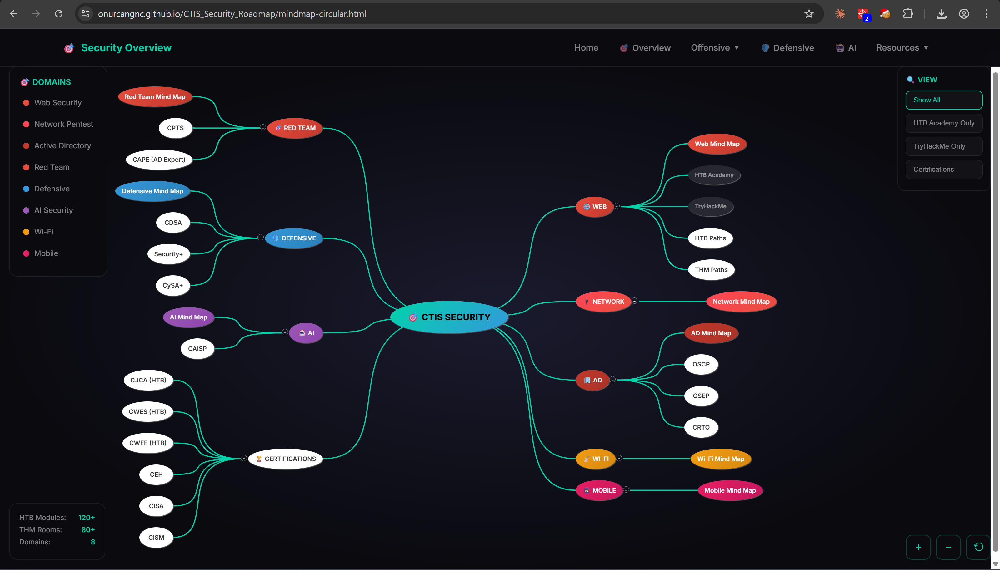
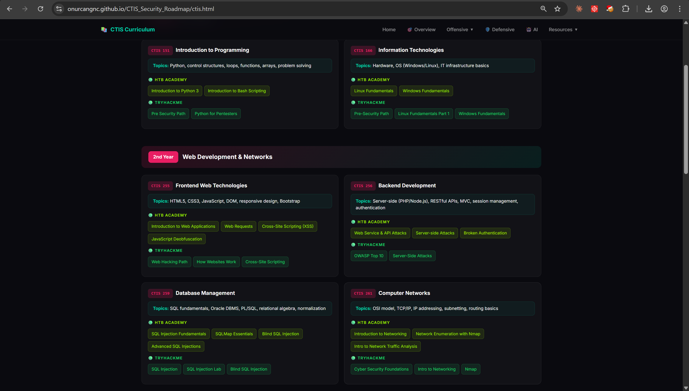
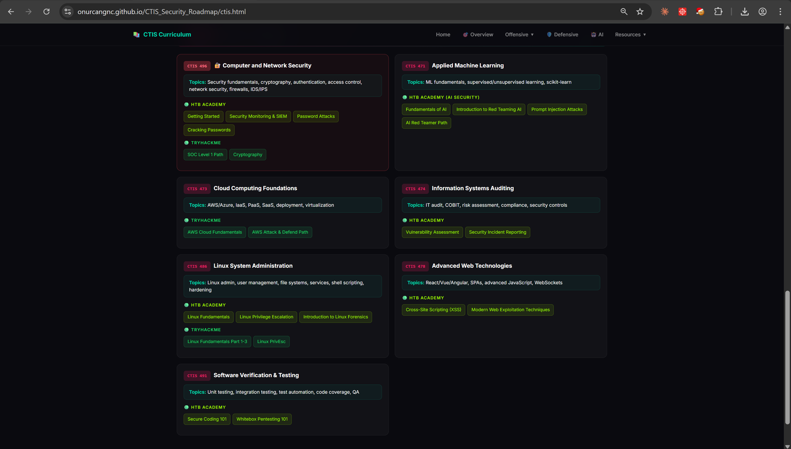
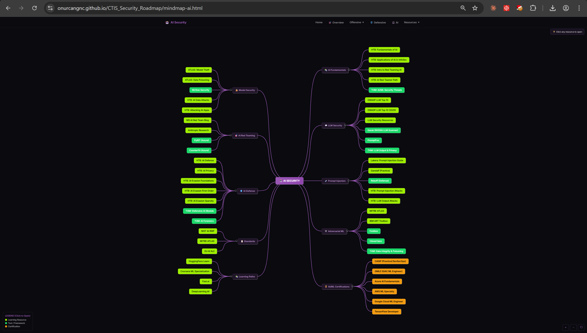
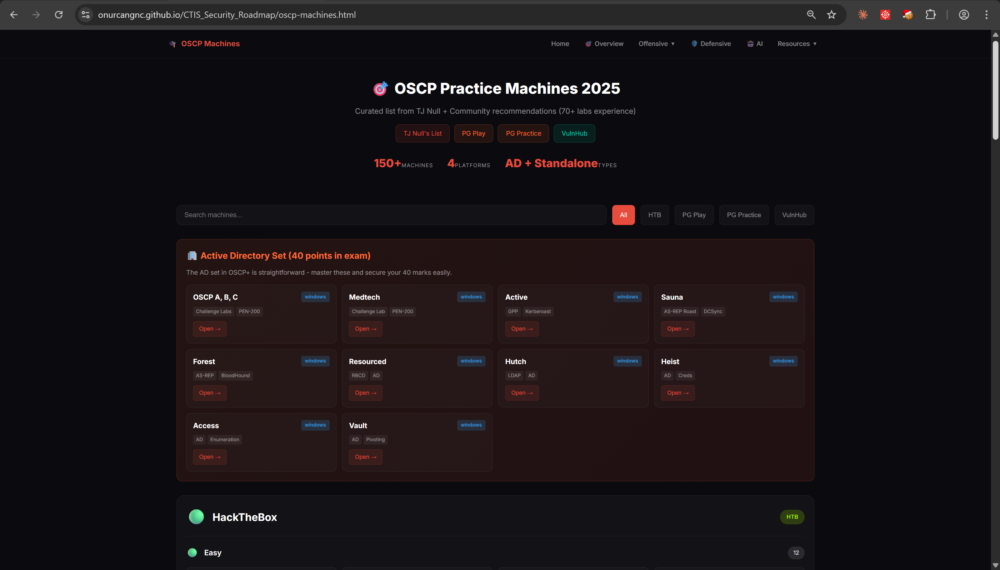

How I turned repetitive questions coming from students into an interactive resource for aspiring security professionals ?
As a cybersecurity researcher and CTIS student at Bilkent University, I have lost count of how many times I have been asked the same questions. "Where do I start learning cybersecurity ?" "What does the meaning of red teaming/penetration testing ?" "What is the difference between Network Security & Defensive Security ?" "Why people calling offensive security as ethical hacking or simply hacking ?"
Finding myself repeating answers, over DMs, group chats, hoca's redirections even between classes, I began seeing a pattern. What kept coming up was not random. There was a huge gap. Students studying CTIS were stuck on theory without clear steps to real world practice. A map felt necessary, not just helpful. One visual representation that showed links between lectures and live defense work, not tomorrow now. Boxes connected, colors added meaning ,so what was is the result ? Built piece by piece while others asked once too often.
The Problem: Information Overload
The cybersecurity learning landscape is genuinely overwhelming. HTB Academy offers over 90 modules. TryHackMe has hundreds of rooms and learning paths. PortSwigger Web Security Academy provides 200+ labs. Then there are certifications from Offensive Security, CompTIA, and EC-Council, plus countless YouTube channels, blogs, and Discord servers competing for attention. For a CTIS student taking courses like Computer Networks or Computer and Network Security, the question should not be "Where can I learn ?" The real challenge is figuring out where to start and how it connects to what they are already learning in class.
The Solution: CTIS Security Roadmap
One way to tackle such challenge involves a live webpage built with different views. It's core containing nine clickable diagrams each one diving into topics like Web App Pen Testing, Network Defenses, Active Directory exploits, Red Team tactics, Defense strategies and SOC workflows, AI risks, Wireless threats, Mobile protections, plus a round map tying it all up. Every point you tap jumps straight to matching lessons on HTB Academy or TryHackMe. Finding the right training now skips long browsing sessions.


Beyond the mind maps, each CTIS class now links directly to hands-on security tools. Take CTIS 151 -while studying Python, students find guided paths into penetration testing scripts along with Bash automation tasks. Moving through CTIS 255, front-end coding opens doors straight into cross-site scripting and DOM exploit lessons. Then in CTIS 259, database work pairs tightly with real-world SQL injection examples plus live SQLMap practice. When you get to CTIS 378, earlier ideas start making sense through hands on scanning work. Later, during CTIS 502, those pieces fit into a bigger picture.

Every module link in the roadmap is verified and uses the current URL format. Students will not encounter 404 errors or outdated paths that waste your time. And because students check resources on their phones between classes, the entire interface is mobile responsive. If you face with any issues then contact with me :)

Technical Implementation
The entire roadmap is built as a static website with no backend, no database and no hosting costs. The stack was intentionally simple: HTML5 and CSS3 with custom design and no frameworks, vanilla JavaScript, the jsMind library for interactive mind maps, and 14 HTML files totaling about 394KB. I chose static architecture for several reasons. There are zero servers to manage, which means zero maintenance headaches. The pages load instantly. The entire project can be hosted anywhere from GitHub Pages to Netlify or even run locally. Students can download it and use it offline during commutes or in areas with poor connectivity. For the design philosophy, I wanted the interface to feel like a hacker's tool rather than a corporate training portal. Dark theme, neon accents, clean typography. The aesthetic draws inspiration from Watch Dogs and cyberpunk design language, making it something students actually want to use.

My Future Expectations After Project :)
After first release, hopefully the roadmap will help CTIS students in ways I did not fully anticipate. Students have to use it to choose their specialization, understanding the essential differences between offensive and defensive security or between application security testing and infrastructure pentesting. Additionally, they connect their coursework to hands-on practice, realizing that CTIS 259's SQL teaching is the foundation for learning SQL injection techniques. They map out certification preparation with clear paths to CPTS, OSCP, and other industry credentials. Hopefully, I will hear that the same questions "How to start ?" "What is the difference of Network Security and web pentesting" come up much less frequently :). When someone asks where to start, I can point them to one resource instead of typing out the same explanation for the hundredth time. Honestly, real pentesting instincts always coming from repetitions and thousands of trials and more associated with real world testing. Platforms and educative materials are only a prove of your consistency & a way of methodology crafting. In conclusion, I was not feel fully bored with your questions ,but ask me like what is the technical difference between reflected XSS and self XSS not like where to begin ? or ask what is the fundamental usage of Amass and Katana as a security tool ? How can I combine multiple tools in a pipeline ? Does CI/CD pipelines works well ? How to identify XSS without using script tag ? The question also should be include some knowledge after that point I will be 100% sure that answer your questions :) I am not memorizing everything just to instantiate it and use it where it needs. Cybersecurity always force you to use any knowledge when it becomes crucial in real world testing or CTFs

Conclusion
For fellow CTIS students, If you are reading this and feeling overwhelmed or burned out by cybersecurity, I want you to know that feeling is completely normal. Cybersecurity is vast and constantly evolving. However, in these platforms what I have learned totally works somehow. Pick one area that genuinely interests you, whether it is belonging with offensive or defensive security or something completely different. My strategy pattern was like fish hook. Therefore, I hooked every field and component and give at least 5 days to understand whether it is my cup of tea or not. If somehow you like the field then do not forget to complete one structured path fully before jumping to another, like HTB's Penetration Tester path or THM's Jr Pentester track. Moreover, it is also acceptable for any certification & its courses. Build something tangible with what you learn, whether it is a tool, a writeup, or a resource like this roadmap. Furthemore, help others along the way, because teaching reinforces your own learning more than almost anything else. The roadmap exists because I got tired of answering the same questions (even though) you have your search engines on AIs/more advanced search engines and ethical hacking platforms compared to my era 2020-2021. Honestly, these type of questions showed me that people may trusted my guidance. From my point of view, it is a responsibility I do not take lightly, and that is why I put real effort into making this resource as useful as possible.
May The Offensive Security Be With You ! ! !